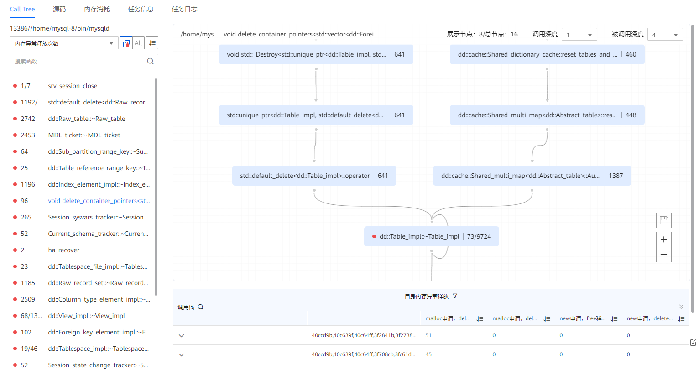

前提条件
已创建内存泄漏诊断任务，并且成功完成分析。
操作步骤
- 在“工程管理”区域，依次单击指定工程和分析任务名称前的
 。
。展开节点列表。
- 单击节点名称查看分析结果。单击节点名称默认打开“Call Tree ”页签，如图1所示，界面参数描述如表1所示。
表1 Call Tree参数说明 参数
说明
进程名
显示进程名。
可通过下拉菜单切换进程。
内存泄漏次数
选择内存泄漏次数。
说明：可通过下拉菜单切换成内存泄漏大小或内存异常释放次数。
调用深度
显示往下延伸的深度。
被调用深度
显示往上延伸的深度。
自身内存泄漏
显示自身泄漏的信息。
说明：可通过筛选自身内存泄漏信息或者子程序内存泄漏信息。
函数名
显示存在内存泄漏的函数。
泄漏次数
显示泄漏次数。
可单击
 按照泄漏次数进行排序。
按照泄漏次数进行排序。泄漏大小（Byte）
显示泄漏大小。
可单击
 按照泄漏大小进行排序。
按照泄漏大小进行排序。
- 单击
 可查看自身发生泄漏的函数，单击
可查看自身发生泄漏的函数，单击 可查看整个调用栈的内存泄漏函数，单击
可查看整个调用栈的内存泄漏函数，单击 对函数按照次数或大小进行排序。
对函数按照次数或大小进行排序。 - 单击
 可对调用栈图进行缩放，单击可保存svg图。
可对调用栈图进行缩放，单击可保存svg图。 - 节点框中，左侧显示函数名，右侧显示泄露次数或泄露大小，红点表示函数本身发生泄露。
- 当鼠标置于图中的节点时，会显示对应的信息。单击“查看源码”，右侧会显示源码弹窗，可查看具体泄漏的函数代码。
- 单击
- 单击
 将“内存泄漏次数”切换成“内存泄漏大小”，如图2所示。
将“内存泄漏次数”切换成“内存泄漏大小”，如图2所示。
- 单击
 将“内存泄漏大小”切换成“内存异常释放次数”，如图2所示。图3 内存异常释放次数
将“内存泄漏大小”切换成“内存异常释放次数”，如图2所示。图3 内存异常释放次数
 可单击
 展开表头勾选需要显示的列。
展开表头勾选需要显示的列。可单击操作栏下的“查看源码”查看具体异常释放的函数代码。
- 单击“任务信息”页签查看当前节点任务的详细配置信息和采集信息。
如果任务执行失败，“任务信息”界面上会显示任务失败的原因。
- 单击“任务日志”页签查看详细的日志信息。